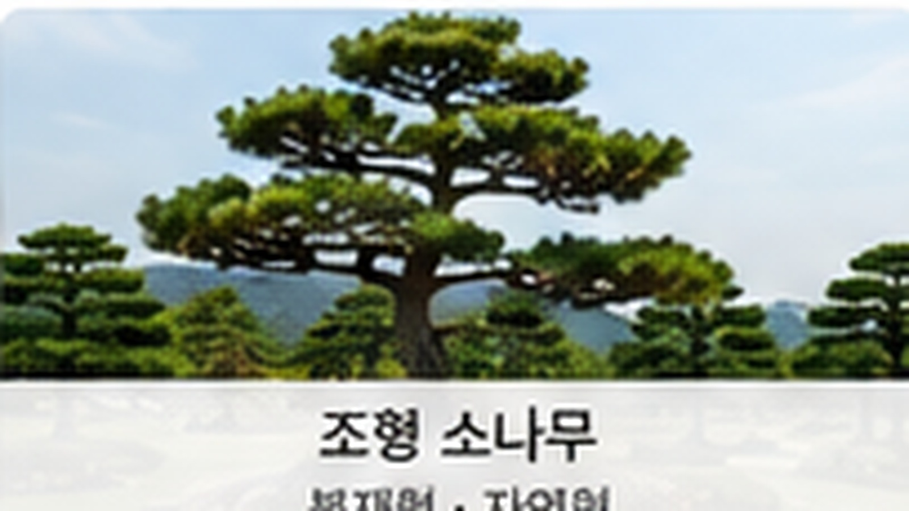
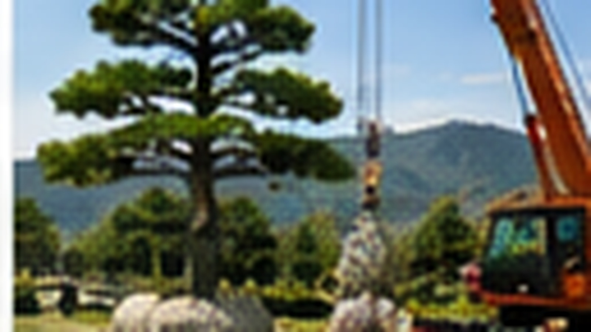

조경용 소나무
전원주택·정원에 어울리는 기본 조경수
가격 문의 →수형과 크기를 살펴보고 공간에 어울리는 소나무를 상담합니다.
소나무는 단순히 크기만 보고 선택하기보다 수형, 공간, 주변 수목과의 조화를 함께 고려해야 합니다. 홍능조경은 현장과 목적에 맞는 소나무를 상담하고 식재 과정을 안내합니다.
정원과 공간의 크기, 배치에 어울리는 수형을 함께 검토합니다.
조경 목적에 맞는 나무의 상태와 형태를 확인해 안내합니다.
현장 여건과 배치를 고려해 식재 방법을 상담합니다.


원하시는 공간의 사진과 대략적인 크기를 알려주시면 상담해드립니다.